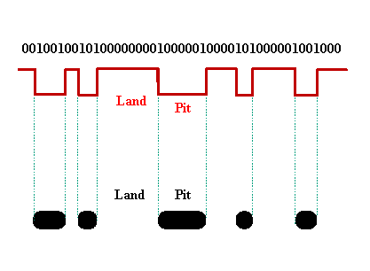
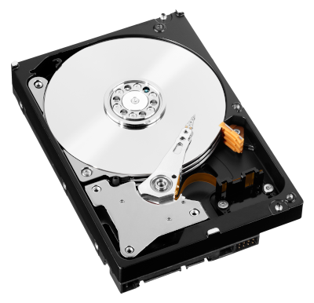

Secondary Storage
Objectives
- To explain the purpose and significance of secondary storage in a computer system, distinguishing it from primary storage (RAM) in terms of data retention and volatility.
- To describe common types of secondary storage devices, such as optical, magnetic, and solid-state storage, and understand their characteristics and applications.
- To understand how optical storage, magnetic storage, and solid-state storage work, including the underlying technologies and mechanisms involved in reading and writing data.
- Analyze the advantages and disadvantages of each type of secondary storage, considering factors such as capacity, speed, portability, durability, reliability, and cost.
- To recommend suitable storage devices and media for specific applications based on their understanding of the characteristics and suitability of different types of secondary storage.
Secondary storage is a crucial component of computer systems, distinct from the faster but volatile primary storage (RAM). It serves the purpose of long-term data retention even when the computer is powered off. Secondary storage devices are non-volatile, providing a means to store large amounts of data permanently.
Primary storage (RAM) is volatile, it loses its data when the power is turned off. Secondary storage retains data, ensuring that files, applications, and the operating system persist across sessions.
Secondary storage devices offer significantly larger storage capacities compared to primary storage, accommodating vast amounts of data, including the operating system, applications, and user files.
Secondary storage allows for the organization and storage of various types of data, including documents, multimedia files, applications, and the system's essential software components.
Secondary storage facilitates the sharing and transfer of data between different devices. USB drives, external hard drives, and network-attached storage (NAS) are examples of secondary storage devices used for data portability.
Common Types of Storage
Optical Storage
An optical disk has a single spiral track, the disk is placed on a spindle and rotates. It is read from the inside to the outside. The binary data is encoded as microscopic variations in the height of the disc's surface, known as pits and lands. Bits are encoded as transitions between raised lands and etched pits.

To read the data, an infrared laser is beamed through the CD's polycarbonate substrate. The light that bounces off then measured. Because pits and lands pass different amounts of light, an optical pickup can read the pattern by detecting changes in the reflected beam as the laser scans the groove. These measurements can then be translated back into the original ones and zeros.
DVDs use a similar methodology but employ a shorter-wavelength red laser that permits a narrower beam. This allows tracks to be spaced closely enough to shoehorn 4.37GB (4.7 billion bytes) onto one stamped data layer, more than six times the CD's 700MB capacity.
| Description | Optical storage uses lasers to read and write data on optical discs, like CDs, DVDs, and Blu-ray discs. |
|---|---|
| Advantages | High capacity, low cost, durability, portability. |
| Disadvantages | Slower access times compared to magnetic and solid-state storage. |
Magnetic Storage
Magnetic disks work by using magnetic fields to encode binary data on the surfaces of rotating platters. The read/write heads interact with these magnetic fields to read and write data, and the organized structure of tracks and sectors allows for efficient storage and retrieval of information.

The surface of a magnetic disk is coated with a thin layer of magnetic material, typically a ferromagnetic material like iron oxide. A hard disk consists of multiple circular disks called platters, which are stacked on a spindle. Each platter has two surfaces where data is magnetically recorded. A read/write head is positioned above and below each platter. These heads are mounted on arms that can move across the surface of the platters. The direction of the magnetic polarity on the disk's surface determines the value of the stored bits. For example, one magnetic polarity might represent a binary 0, while the opposite polarity represents a binary 1.
When data needs to be stored on the disk, the write head generates a magnetic field. The magnetic field aligns the magnetic particles on the surface of the platter, magnetizing specific regions to represent the 0s and 1s of the binary data.
When data needs to be retrieved, the read head senses the magnetic orientation of the particles on the disk's surface as it passes over them. The magnetic field induces electrical currents in the read head, producing voltage changes that are then interpreted as binary data.
Data is organized into concentric circles on the platters, known as tracks, and further divided into sectors. The combination of tracks and sectors creates a grid-like structure for efficient storage and retrieval.
The platters spin at high speeds, typically thousands of revolutions per minute (RPM). The rotational speed affects the access time, or the time it takes for the desired data to rotate under the read/write heads.
The movement of the read/write heads across the platters is controlled by the actuator arm. The time it takes for the heads to move to the correct track is known as seek time.
| Description | Magnetic storage uses magnetic fields to read and write data on magnetic media, like hard drives and magnetic tapes. |
|---|---|
| Advantages | High capacity, relatively low cost, fast access times. |
| Disadvantages | Susceptible to mechanical failures, not as portable as solid-state storage. |
Solid-State Storage
Solid-state storage devices, such as Solid-State Drives (SSDs), work on entirely different principles compared to magnetic disks (Hard Disk Drives or HDDs). Instead of using magnetic fields to store data on spinning disks, SSDs utilize electronic memory cells to store and retrieve information. Here's an overview of how solid-state storage devices work:
The fundamental components of an SSD are memory cells, which are electronic circuits that can store binary data as electrical charges. These cells are typically made from NAND-based flash memory - a type of non-volatile storage technology that retains data even when the power is turned off. It is composed of memory cells organized into pages and blocks.
Similar to magnetic disks, data is represented in binary format, with each memory cell capable of storing multiple bits. Common configurations include Single-Level Cell (SLC), Multi-Level Cell (MLC), Triple-Level Cell (TLC), and Quad-Level Cell (QLC), indicating how many bits each cell can store.
To write data, an SSD uses electrical voltage to program the memory cells. The voltage changes the state of the cells, representing binary 0s and 1s. Unlike HDDs, there are no moving parts involved in this process.
To read data, the SSD measures the electrical charges stored in the memory cells. This is done by detecting the level of charge in each cell, allowing the retrieval of the originally stored binary values.
One of the key distinctions from HDDs is that SSDs have no mechanical components, such as spinning disks or moving read/write heads. This absence of moving parts contributes to faster data access times, improved durability, and reduced susceptibility to mechanical failures.
| Description | Solid-state storage uses flash memory to store data, as found in USB drives, SSDs (Solid-State Drives), and memory cards. |
|---|---|
| Advantages | Very fast access times, high durability, no moving parts, portable. |
| Disadvantages | Higher cost per gigabyte compared to magnetic storage. |
Suitable Storage Devices and Media for a Given Application
| Application | Recommendation |
|---|---|
| Archiving large volumes of data for long-term preservation. | Optical storage, such as Blu-ray discs or DVDs. They offer high capacity and durability. |
| Carrying important documents while traveling. | Solid-state storage, like a USB flash drive. It's portable and reliable. |
| Installing and running an operating system on a computer. | Solid-state storage (SSD) or magnetic storage (hard drive). SSDs offer speed, while hard drives provide cost-effective high capacity. |
Advantages and Disadvantages of Storage Devices and Media
| Feature | Advantages | Disadvantages |
|---|---|---|
| Capacity | Optical and magnetic storage offer high capacity. Solid-state storage provides a good balance between capacity and speed. | Solid-state storage is typically smaller in capacity compared to optical or magnetic storage. |
| Speed | Solid-state storage is the fastest, followed by magnetic storage. Optical storage is slower for random access. | Optical storage is slow for random access, which can affect performance. |
| Portability | Solid-state storage is highly portable due to its small size. Optical storage is moderately portable. Magnetic storage is less portable due to its size and sensitivity to shocks. | |
| Durability | Solid-state storage is durable due to no moving parts. Optical storage is relatively durable. Magnetic storage is more prone to mechanical failure. | |
| Reliability | Solid-state storage is highly reliable. Optical storage is moderately reliable. Magnetic storage may be less reliable due to mechanical parts. | |
| Cost | Optical and magnetic storage are typically more cost-effective in terms of cost per gigabyte. Solid-state storage is more expensive but offers advantages in speed and reliability. |
Cloud Storage
Instead of storing data locally on physical hardware such as hard drives or servers, users can save their files and information to a remote data center via the internet, usually called cloud storage. The user, through registering for an account with the provider, has access to a given amount of storage on the provider's servers. Popular cloud storage solutions include Google Drive, Dropbox, Microsoft OneDrive, and Amazon S3 (Simple Storage Service). Typically, users are given a minimum quota with the option to increase or decrease their allocated amount as needed.
The providers take responsibility for maintaining, managing and backing up the data. Users can access their stored data from anywhere with an internet connection. It allows for easy file sharing, collaboration, and retrieval without being tied to a specific physical location.
Cloud storage platforms often include collaboration features, allowing multiple users to work on and share documents in real-time. This promotes collaboration and streamlines workflows, especially for remote or distributed teams.
Cloud storage eliminates the need for organizations or individuals to invest in and maintain their own physical infrastructure. Users typically pay for the storage capacity they use, making it a cost-efficient solution.
Popular cloud storage services include Google Drive, Dropbox, Microsoft OneDrive, and Amazon S3 (Simple Storage Service). These services cater to a wide range of users, from individual consumers to large enterprises, offering different storage plans and features to meet diverse needs.
Cloud storage vs local storage
| Aspect | Cloud Storage | Local Storage |
|---|---|---|
| Accessibility | Advantage: Remote access from anywhere with internet connectivity. Facilitates easy sharing and collaboration. | Advantage: Direct access to data without internet dependency. Suitable for offline use. |
| Disadvantage: Requires internet connection; access speed depends on network quality. | Disadvantage: Limited accessibility, especially when away from the local storage device. | |
| Scalability | Advantage: Easily scalable to accommodate changing storage needs. Pay-as-you-go models offer flexibility. | Advantage: Limited by the physical capacity of the local storage device. Expansion may require additional hardware. |
| Disadvantage: Costs can increase as storage usage grows. Dependency on the cloud provider's pricing structure. | Disadvantage: Limited scalability; upgrading may involve purchasing new hardware. | |
| Data Redundancy | Advantage: Built-in redundancy measures enhance data reliability and protect against hardware failures. | Advantage: Dependent on user-managed backup and redundancy strategies. |
| Disadvantage: Relies on the cloud provider's infrastructure for redundancy. Data may be at risk in case of provider issues. | Disadvantage: Greater responsibility for user to implement backup and redundancy solutions. | |
| Automatic Backup | Advantage: Many cloud services offer automatic and regular backups, reducing the risk of data loss. | Advantage: Dependent on user-initiated backup processes. |
| Disadvantage: Limited control over backup processes; reliance on provider's schedules. | Disadvantage: User must actively manage and schedule backups. | |
| Collaboration Tools | Advantage: Integration of collaboration features, enabling real-time document sharing and editing. | Advantage: Collaboration relies on local network or file-sharing solutions. |
| Disadvantage: Dependence on the cloud platform's collaboration capabilities. | Disadvantage: May lack real-time collaboration features present in cloud platforms. | |
| Security Measures | Advantage: Cloud providers implement robust security measures, including encryption and access controls. | Advantage: Local storage can be physically secured and offline, reducing some online security risks. |
| Disadvantage: Potential security concerns due to reliance on external providers; data breaches are a risk. | Disadvantage: Vulnerable to physical damage or theft; user bears responsibility for local security measures. | |
| Cost-Efficiency | Advantage: Eliminates the need for upfront hardware investments. Users pay for the storage capacity they use. | Advantage: One-time purchase cost; no recurring fees. |
| Disadvantage: Ongoing subscription costs; total cost of ownership may increase over time. | Disadvantage: Initial hardware costs; potential additional costs for maintenance and upgrades. |
Note: The advantages and disadvantages mentioned may vary based on specific cloud storage providers and local storage configurations.